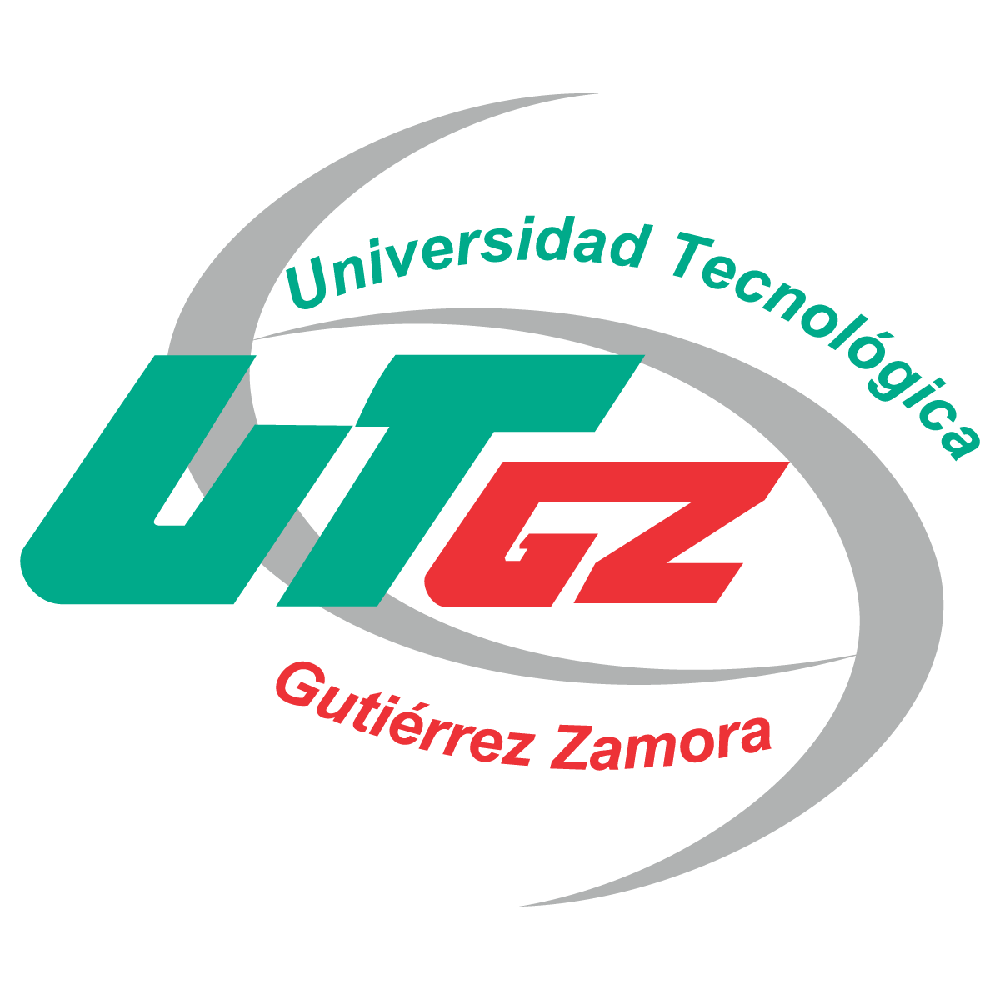

BIENVENIDO A LA UTGZ Universidad Bilingüe Internacional y Sustentable Tiene como finalidad ofrecer formación profesional a los jóvenes, en las áreas de mayor demanda laboral nacional e internacionalmente, permitiéndoles desarrollar sus capacidades para integrarse bajo las mejores condiciones al sector productivo. La doble titulación (TSU e Ingeniería) y el modelo 100% bilingüe, complementan la formación académica de los beneficiarios, impulsando su desarrollo personal y profesional.
